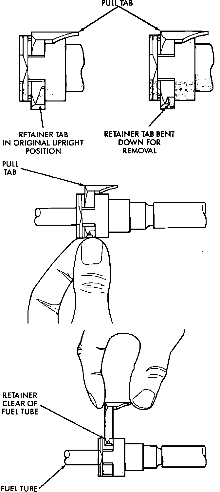
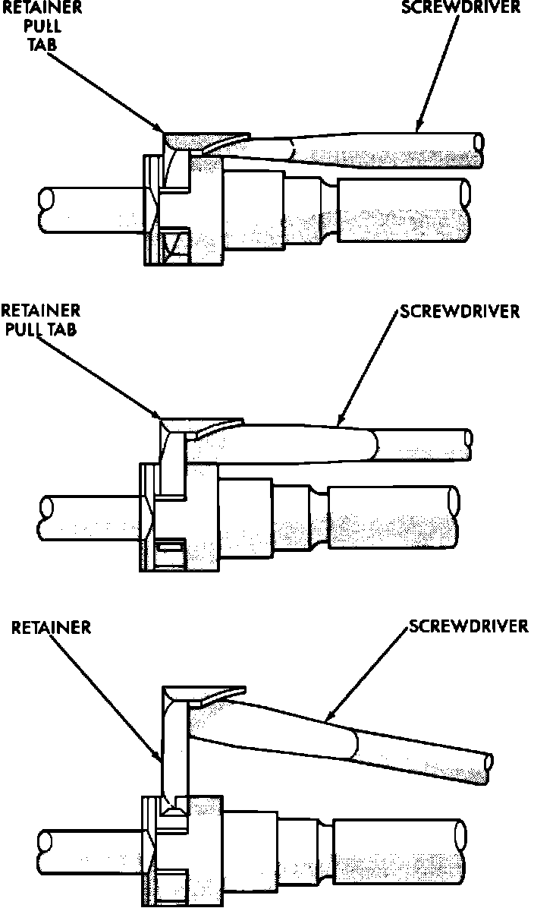
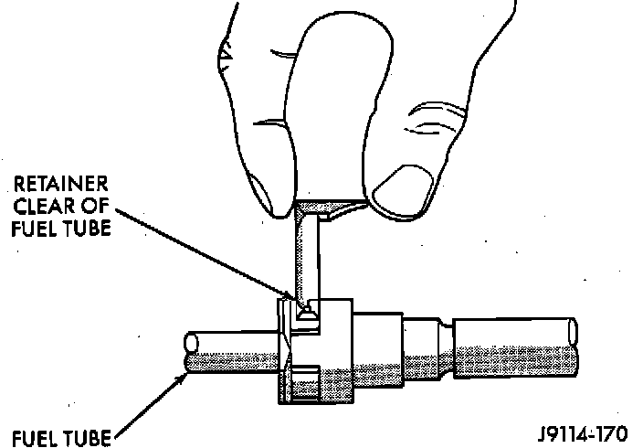

Single TAB Type Fittings
CAUTION: The fuel system remains pressurized after engine has been shut off. Release system pressure prior to opening system.WARNING: Gasoline is extremely volatile, when servicing fuel systems always wear eye protection, keep open flame away from fuel system components, and prohibit smoking in service areas.
NOTE: Wrap shop towels around fuel hoses to absorb any fuel that spills during fuel tank replacement
Quick Connect Fitting Assembly/Disassembly (Except Chassis Fuel Tubes):

REMOVAL (MANUAL)
1. Bend the retainer tabs down.
2. While pulling up on the underside of the retainer tab, push the legs of the retainer clip away from each other.
3. Raise the pull tab until the hooks on the legs of the retainer clip clears the fuel tube.
4. Pull fuel tube out of the Quick-Connect fitting.
5. Check the connector body and retainer for damage. Replace if necessary.
Disconnecting Quick Connect Fittings (Screwdriver):

REMOVAL (SCREWDRIVER)
1. Bend the retainer tabs down.
2. Insert a screwdriver between the retainer clips pull tab and the body of the Quick-Connect fitting.
3. Rotate the screwdriver 90 degrees to lift the retainer clip.
4. Raise the pull tab while pushing the legs of the retainer clip away from each other.
5. Raise the retainer clip until the hooks on the legs of the retainer clip clears the fuel tube.
6. Pull fuel tube out of the Quick-Connect fitting.
7. Check the connector body and retainer for damage. Replace if necessary.
Quick Connect Fuel Fitting:

INSTALLATION
1. Before installing the fuel tube into Quick-Connect fitting, clean the fuel tube and lubricate the nipple with new engine oil.
2. Push fuel tube into Quick-Connect fitting until the stop on the fuel tube rests against the back of the Quick-Connect fitting.
3. Push the retainer clip into the slot in the Quick-Connect fitting until it locks in place.
4. Bend the retainer clip tabs up into their locking position.